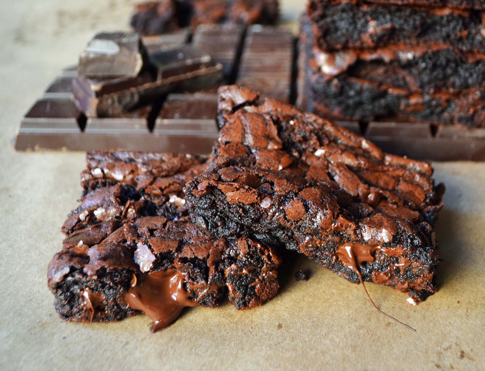

Better Than a Boyfriend Brownies

Here it is... your foolproof, satisfy your chocolate cravings, ultimate chocolate chunk brownie recipe
These "Better than a Boyfriend Brownies" are whipped up in one bowl and are so easy even kids can make them. I am pretty sure I could make these brownies in my sleep. I've tried more brownie recipes than I would like to admit but all of that practice has made me a brownie connoisseur of sorts, right? This is hands down the BEST homemade brownie recipe.
Ingredients
- 1 cup Butter softened
- 2 cups Sugar
- 1 cup Brown Sugar
- 4 Eggs
- 1 Tablespoon Vanilla
- 1 cup Flour
- ½ cup Cake Flour
- 1 cup Cocoa Powder
- ½ teaspoon Salt
- 1 ½ cups Semi-Sweet Chocolate Chunks or Chips
Steps
- Preheat oven to 350 degrees.
- In a large mixing bowl, cream together butter, sugar, and brown sugar for 3-4 minutes or until light and fluffy. Add eggs one at a time, mixing well after each addition. Add vanilla.
- Stir in flour, cake flour, cocoa, and salt until mixed together.
- Fold in chocolate chips.
- Pour into 9 x 13 pan and spread evenly.
- Bake for 28-36 minutes.